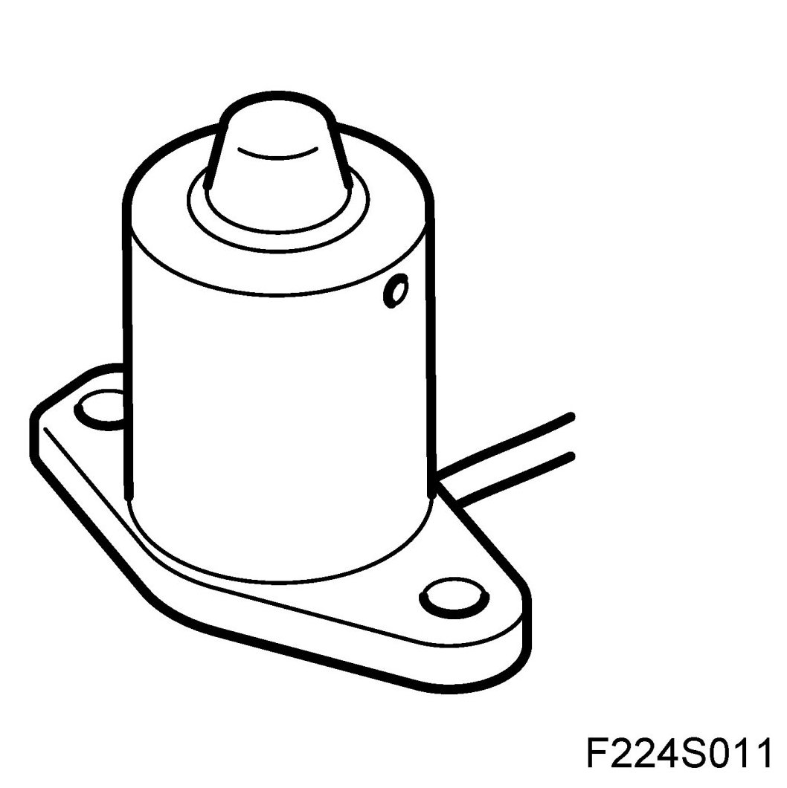
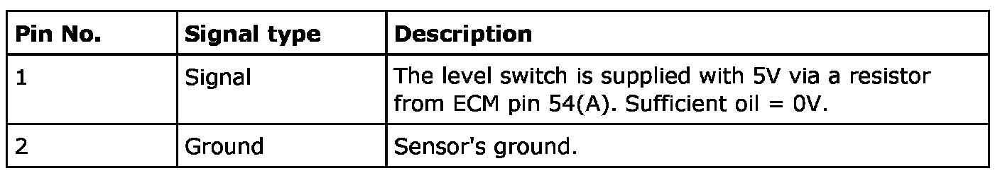
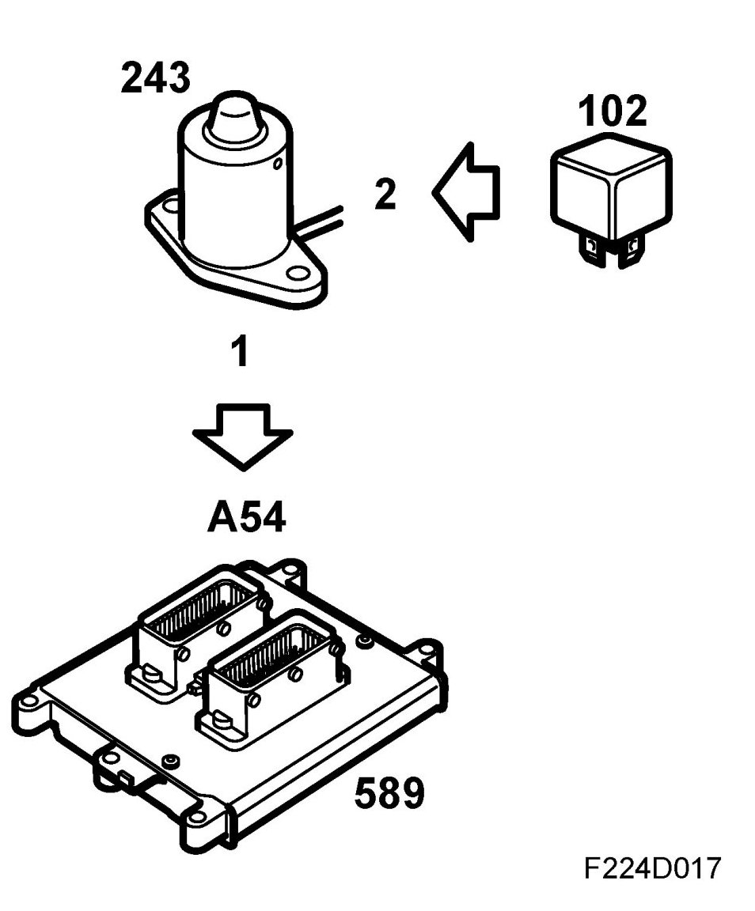
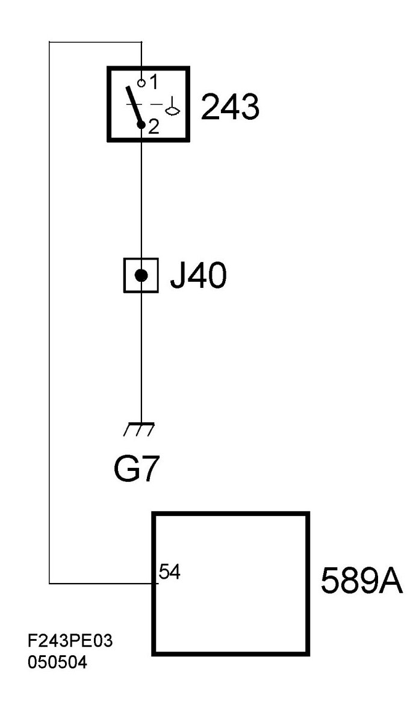

Oil Level Sensor: Description and Operation
Engine Oil Level Switch (243), T8
Location
Engine oil level switch (243)
Main task
The sensor sends a message to the engine control module, which confirms that the level is low by evaluating the time it has been low.
The engine control module then transmits the bus message "Oil level low", which is used by SID. The information from the oil level sensor is a filtered value as temperature, engine speed, acceleration, and speed are used to calculate the average oil level.
It is still important that the oil level is checked using the dipstick as before as that message is not sent in SID. If the message is nonetheless displayed, the oil level is at MIN on the dipstick.
Type
The sensor is float type with switch function. Open contact when oil level too low, closed at correct level.

Connection


